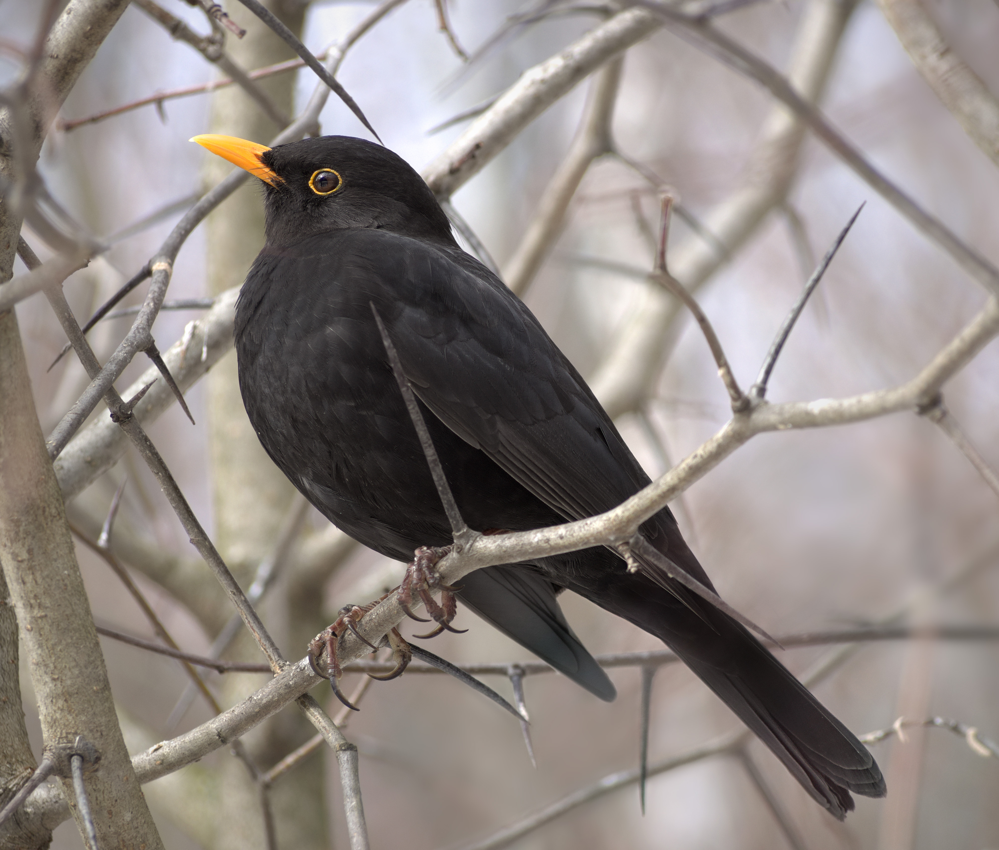
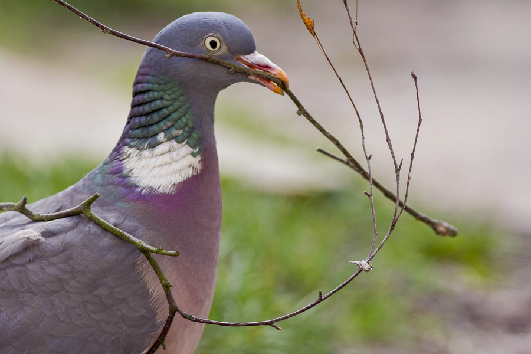
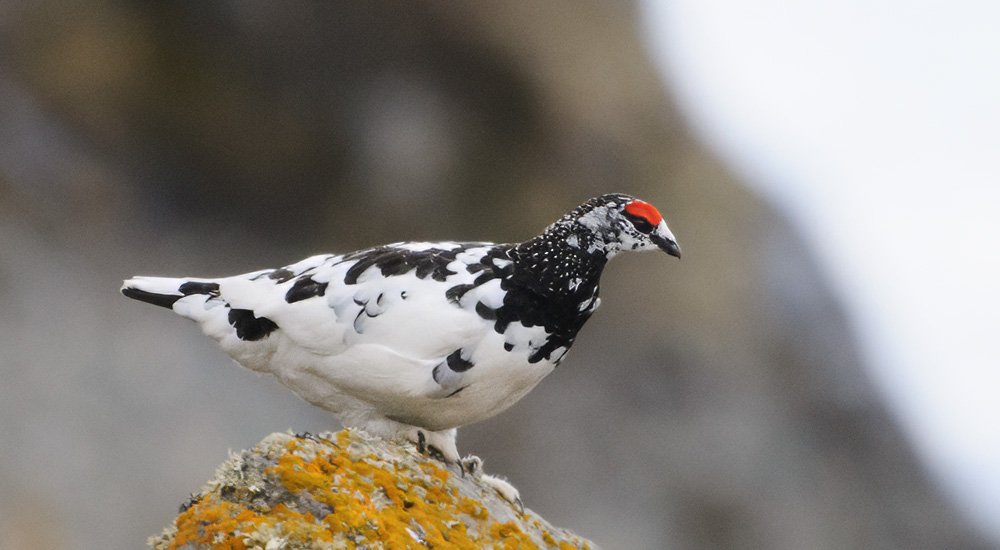
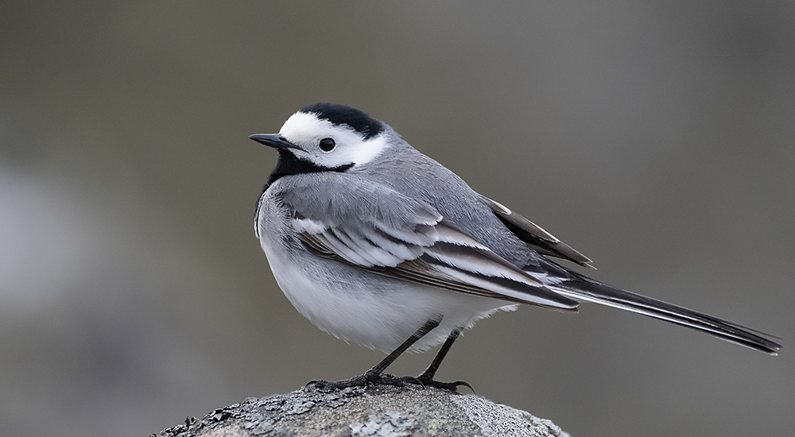

Fågelskådning
Jag har inte alltid varit intresserad av fåglar. För några år sedan så skänktes två undulater till min familj och sedan dess så har mitt intresse för fåglar av alla arter höjts en del. När jag är ute och promenerar så ser och hör jag olika typer av fåglar, exempelvis: måsar, gäss, duvor, kråkor, änder mm. Oftast tar man med sig kikare för att kunna spana på fåglar från längre håll utan att skrämma bort dem. Det är väldigt enkelt att börja med fågelskådning, och billigt då det knappt krävs utrustning. Du kan antingen bara ge dig ut och skåda fåglar när du promenerar, men kikare rekommenderas och kanske en liten fågelbok för att kunna identifiera arter du inte kännner till.




| Fågel | Diet | Status | Vetenskapligt namn |
|---|---|---|---|
| Koltrast | Allätare | Livskraftig | Turdus merula |
| Ringduva | Växtätare | Livskraftig | Columba palumbus |
| Fjällripa | Växtätare | Livskraftig | Lagopus muta |
| Sädesärla | Insekt/Växtätare | Livskraftig | Motacilla alba |
Om du vill lära dig mer om fågelskådning så lämnar jag en länk som kan vara av intresse: Natursidan